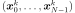
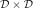

NonStationaryCovarianceModelFactory¶
(Source code, png, hires.png, pdf)
{kind=link}
{kind=link}

-
class
NonStationaryCovarianceModelFactory(*args)¶ Estimation of a non stationary covariance model.
Refer to Estimation of a non stationary cov. model.
Notes
We consider
 be a multivariate process of dimension d where
be a multivariate process of dimension d where  .
We denote
.
We denote  the vertices of the mesh
the vertices of the mesh  .
.X is supposed to be a second order process and we note its covariance function. X may be stationary or non stationary as well.
We suppose that we have K fields and we note  the values of the field k on the mesh
 .
.We recall that the covariance function C writes:
where the mean function
 is defined by:
is defined by:
First, we estimate the covariance function C on the vertices of the mesh
using the empirical mean estimator:Then, we build a covariance function defined on  which is a piecewise constant function defined on by:
where k is such that is the vertex of
the nearest to  and
and  the nearest to
the nearest to  .
.Attributes: thisownThe membership flag
Methods
build(*args)Estimate the covariance model. buildAsCovarianceMatrix(sample[, isCentered])Estimate the covariance model as a covariance matrix. buildAsUserDefinedCovarianceModel(sample[, …])Estimate the covariance model as a User defined covariance model. getClassName()Accessor to the object’s name. getId()Accessor to the object’s id. getName()Accessor to the object’s name. getShadowedId()Accessor to the object’s shadowed id. getVisibility()Accessor to the object’s visibility state. hasName()Test if the object is named. hasVisibleName()Test if the object has a distinguishable name. setName(name)Accessor to the object’s name. setShadowedId(id)Accessor to the object’s shadowed id. setVisibility(visible)Accessor to the object’s visibility state. -
__init__(*args)¶ Initialize self. See help(type(self)) for accurate signature.
-
build(*args)¶ Estimate the covariance model.
Parameters: - sampleFields
ProcessSample The fields used to estimate the covariance model which is not supposed to be stationary.
Returns: - covEst
CovarianceModelImplementation The estimated covariance model.
Examples
Create the covariance model, a mesh and a process:
>>> import openturns as ot >>> myModel = ot.AbsoluteExponential([0.1]*2) >>> myMesh = ot.IntervalMesher([10]*2).build(ot.Interval([0.0]*2, [1.0]*2)) >>> myProcess = ot.GaussianProcess(myModel, myMesh)
Generate 10 fields:
>>> mySample = myProcess.getSample(10)
Estimate the covariance model without supposing the stationarity:
>>> myEstCov = ot.NonStationaryCovarianceModelFactory().build(mySample)
- sampleFields
-
buildAsCovarianceMatrix(sample, isCentered=False)¶ Estimate the covariance model as a covariance matrix.
Parameters: - sampleFields
ProcessSample The fields used to estimate the covariance model.
- isCenteredbool, optional
Flag telling if the given sample is from a centered process or if it has to be centered by the empirical mean. Default value is False.
Returns: - covEst
CovarianceMatrix The unbiased estimation of the discretization of the covariance function over the mesh defining the given sample.
- sampleFields
-
buildAsUserDefinedCovarianceModel(sample, isCentered=False)¶ Estimate the covariance model as a User defined covariance model.
Parameters: - sampleFields
ProcessSample The fields used to estimate the covariance model.
- isCenteredbool, optional
Flag telling if the given sample is from a centered process or if it has to be centered by the empirical mean. Default value is False.
Returns: - covEst
UserDefinedCovarianceModel The estimated covariance model that can be used as a
UserDefinedCovarianceModel.
- sampleFields
-
getClassName()¶ Accessor to the object’s name.
Returns: - class_namestr
The object class name (object.__class__.__name__).
-
getId()¶ Accessor to the object’s id.
Returns: - idint
Internal unique identifier.
-
getName()¶ Accessor to the object’s name.
Returns: - namestr
The name of the object.
-
getShadowedId()¶ Accessor to the object’s shadowed id.
Returns: - idint
Internal unique identifier.
-
getVisibility()¶ Accessor to the object’s visibility state.
Returns: - visiblebool
Visibility flag.
-
hasName()¶ Test if the object is named.
Returns: - hasNamebool
True if the name is not empty.
-
hasVisibleName()¶ Test if the object has a distinguishable name.
Returns: - hasVisibleNamebool
True if the name is not empty and not the default one.
-
setName(name)¶ Accessor to the object’s name.
Parameters: - namestr
The name of the object.
-
setShadowedId(id)¶ Accessor to the object’s shadowed id.
Parameters: - idint
Internal unique identifier.
-
setVisibility(visible)¶ Accessor to the object’s visibility state.
Parameters: - visiblebool
Visibility flag.
-
thisown¶ The membership flag